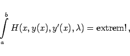
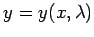
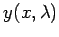
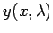
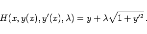
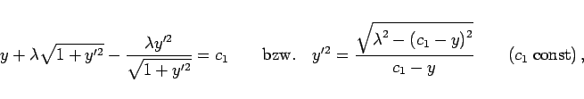
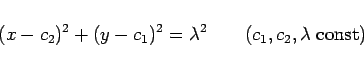
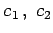
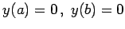
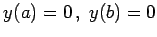

Inhalt Index DeskTop Bronstein

 Variationsrechnung Variationsaufgaben mit Funktionen einer Veränderlichen
Variationsrechnung Variationsaufgaben mit Funktionen einer Veränderlichen


Darunter versteht man im wesentlichen isoperimetrische Probleme: Der einfachen Variationsaufgabe, die dort beschrieben wird und die durch das Funktional (10.11) gekennzeichnet ist, wird zusätzlich eine Nebenbedingung der Form
auferlegt, wobei die Konstante l und die Funktion G gegeben sind. Eine Methode zur Lösung solcher Probleme geht auf LAGRANGE zurück (s. Extremwerte mit Nebenbedingungen in Gleichungsform). Man setzt
wobei  ein Parameter ist, und behandelt jetzt die Aufgabe
ein Parameter ist, und behandelt jetzt die Aufgabe
|  | (10.27) |
also eine Extremwertaufgabe ohne Nebenbedingung. Die zugehörige Eulersche Differentialgleichung lautet
Ihre Lösung  hängt noch von dem Parameter  ab, der durch Einsetzen von  in die Nebenbedingung (10.25) bestimmt werden kann.
ab, der durch Einsetzen von  in die Nebenbedingung (10.25) bestimmt werden kann.
| Beispiel |
|
Für das isoperimetrische Problem erhält man |
|  | (10.29a) |
Da in H die Variable x nicht vorkommt, erhält man an Stelle der EULERschen Differentialgleichung (10.28) analog zu (10.22c) die Differentialgleichung
|  | (10.29b) |
deren Lösung die Kreisschar
|  | (10.29c) |
darstellt. Die Werte  und  sind aus den Bedingungen  und der Forderung, daß der Kurvenbogen zwischen A und B die vorgeschriebene Länge l hat, zu bestimmen. Für
sind aus den Bedingungen  und der Forderung, daß der Kurvenbogen zwischen A und B die vorgeschriebene Länge l hat, zu bestimmen. Für  ergibt sich eine nichtlineare Gleichung, die iterativ durch ein geeignetes Näherungsverfahren gelöst werden muß.
ergibt sich eine nichtlineare Gleichung, die iterativ durch ein geeignetes Näherungsverfahren gelöst werden muß.